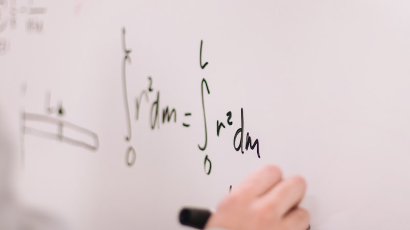
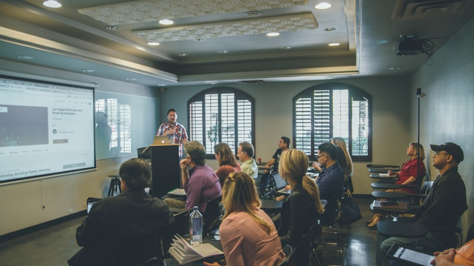
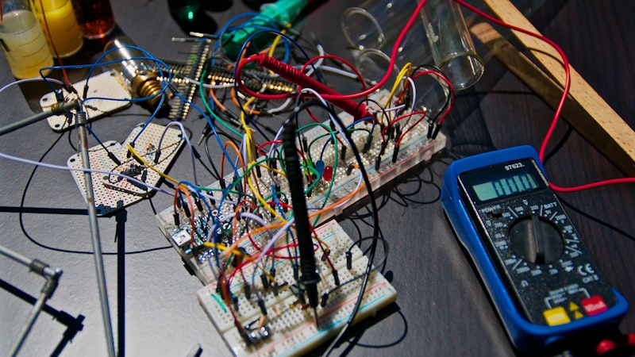
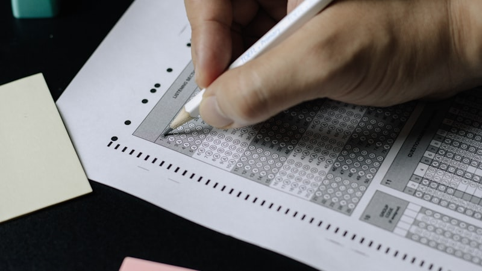
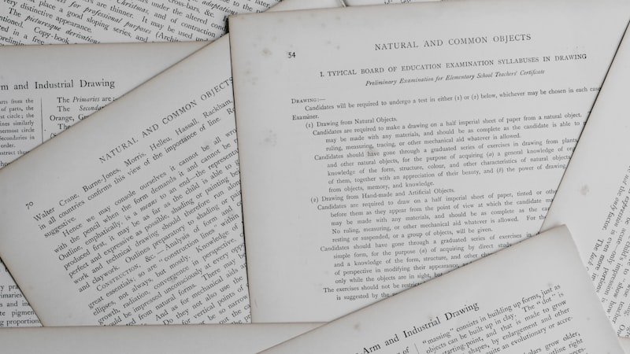

 2026.08.27 · 경기 성남 분당구 · 중2 수학 늘푸른중학교 수학과외 — 도형만 나오면 백지가 된다면 조건을 그림에 옮기는 것부터. 성질 정리와 증명 서술. 자세히 보기
 2026.08.27 · 인천 서해구 · 중3 국어 청라중학교 국어과외 — 매체·화법 단원을 놓치고 있다면 쉬워 보여서 오히려 놓치는 영역. 개념어로 잡습니다. 자세히 보기
 2026.08.27 · 서울 관악구 · 고1 과학 인헌고등학교 과학과외 — 물리만 오면 손을 놓는다면 외울 건 적은데 상황 읽는 힘이 점수를 가릅니다. 자세히 보기
 2026.08.22 · 경기 고양 일산 · 중2 수학 오답노트를 써도 또 틀린다면, 백마중 수학 오답 정리법 베껴 쓰는 노트는 소용없습니다. 원인 분류와 재풀이로. 자세히 보기
2026.08.21 · 서울 강남구 · 중2 수학 선행은 빠른데 점수가 그대로라면, 도곡중 수학 현행 완성 들은 것과 아는 것은 다릅니다. 백지 테스트로 현행부터 확인. 자세히 보기
2026.08.21 · 대구 수성구 · 고2 영어 객관식은 맞는데 서술형에서 깎인다면, 능인고 영어 영작 훈련 읽는 것과 쓰는 것은 다른 능력. 조건 영작과 어법 점검. 자세히 보기
 2026.08.20 · 충북 청주 · 고2 영어 내신과 수능 둘 다 잡으려면, 상당고 영어 병행 전략 따로 공부하면 두 배, 연결하면 한 번에 두 몫. 자세히 보기
2026.08.20 · 초등 영어 · 레벨테스트 영유·사립초 학생 영어학원 레벨테스트(레테) 준비법 파닉스·리딩·어휘·문법·리스닝·스피킹·라이팅 단계별 공부법과 4주 플랜. 자세히 보기
2026.08.19 · 경기 성남 분당 · 중등 수학 답은 맞는데 점수가 깎인다면, 수내중 수학 서술형 훈련 채점 기준을 역산해 과정 점수까지 챙기는 서술형 답안 훈련. 자세히 보기
2026.08.19 · 경남 창원 · 중등 과학 실험은 했는데 설명을 못 한다면, 마산서중 과학 탐구 서술형 변인 구분부터 결과 해석까지, 탐구를 문장으로 옮기는 훈련. 자세히 보기
2026.08.14 · 서울 관악 · 중등 수학 시험만 보면 실력이 안 나온다면, 인헌중 수학 실전 감각 훈련 실전 감각·시간 배분 훈련과 학교 기출로 아는 만큼 점수 내기. 자세히 보기
2026.08.13 · 서울 서초 · 중등 수학 개념은 아는데 문제가 안 풀린다? 서일중 수학 적용력 훈련 개념과 문제 사이 다리를 놓는 유형별 적용 훈련과 기출 대비. 자세히 보기
2026.08.10 · 서울 목동 · 중등 수학 2학기 중간 D-30, 목동 신목중 수학 역전 플랜 시험 범위 개념 정리부터 학교 기출 유형, 오답 관리까지 30일 플랜. 자세히 보기
2026.08.08 · 서울 중계 · 중등 수학 중계동 학원가에서 놓친 부분, 은행중 수학 1:1로 메우기 대형 학원 진도에서 놓친 개념을 개별 진단으로 채우고 오답 관리. 자세히 보기
2026.08.04 · 서울 목동 · 예비 고1 수학 예비 고1 수학, 지금이 골든타임 — 목동 월촌중 1:1 로드맵 중등 개념 총정리부터 고1 공통수학 선행까지, 방학 골든타임 로드맵. 자세히 보기
2026.08.02 · 서울 성북 · 중등 영어 서울사대부중학교 영어, 서술형·수행평가에서 만점 지키기 배점 큰 서술형·수행평가에서 감점 없이 만점을 지키는 답안 훈련을 안내합니다. 자세히 보기
2026.08.02 · 인천 · 고등 수학 인천예일고등학교 수학, 시험 2주 전 실전 마무리 전략 시험 D-2주, 실전 풀이와 오답 압축으로 마지막에 점수를 끌어올립니다. 자세히 보기
2026.08.02 · 부산 동래 · 고등 영어 부산배정고등학교 영어, 내신과 학생부(학종)를 함께 잡는 법 내신 등급과 세특·수행으로 학생부까지 함께 채우는 전략을 안내합니다. 자세히 보기
2026.08.02 · 전북 전주 · 고등 수학 전주기전여자고등학교 수학, 개념부터 서술형까지 1:1 관리 개념 이해부터 서술형 답안까지 빈틈없이 관리해 내신 등급을 올립니다. 자세히 보기
2026.07.24 · 서울 양천 목동 · 중등 수학 신정중학교 수학, 목동 학군지에서 내신 지키는 법 목동 학군지에서는 실수 하나가 등급을 가릅니다. 진단·심화로 상위권 내신을 지킵니다. 자세히 보기
2026.07.24 · 부산 · 고등 영어 부산국제고등학교 영어, 심화 내신과 수능을 함께 잡는 법 원서 수준 내신과 수능 영어를 하나의 학습으로 묶어 동시에 대비합니다. 자세히 보기
2026.07.24 · 대구 달성 · 고등 수학 포산고등학교 수학, 개념부터 고난도까지 단계별 완성 자기 단계를 건너뛰지 않고 개념→응용→고난도로 밟아 등급을 올립니다. 자세히 보기
2026.07.19 · 세종 아름동 · 중등 수학 아름중학교 수학, 개념 구멍부터 메우는 1:1 진단 과외 개념 구멍을 진단해 약한 단원만 골라 메우고 서술형·응용까지 잡습니다. 자세히 보기
2026.07.19 · 경남 김해 · 중등 영어 삼문중학교 영어, 예습·복습 습관으로 잡는 1:1 과외 매일 예습·복습 루틴을 만들어 어휘·본문·문법을 스스로 챙깁니다. 자세히 보기
2026.07.19 · 강원 원주 · 고등 수학 원주고등학교 수학, 주차별 계획표로 내신 관리하는 과외 시험까지 남은 기간을 주차별 계획표로 쪼개 진도·복습·실전을 관리합니다. 자세히 보기
2026.07.16 · 서울 강남 · 중등 영어 대청중학교 영어, 학원과 1:1 과외 무엇이 다를까 학원과 1:1 과외의 차이, 우리 아이에게 맞는 방식을 알려드립니다. 자세히 보기
2026.07.16 · 부산 동래 · 중등 수학 동래중학교 수학, 스스로 공부하는 힘을 키우는 1:1 과외 스스로 공부하는 힘을 길러 선생님 없이도 해내는 습관을 만듭니다. 자세히 보기
2026.06.30 · 경기 용인 수지 · 고등 내신 용인 수지 풍덕고등학교 내신, 국영수 종합 관리법 국영수 1:1 과외로 등급을 올리고 중간·기말 기출과 수능까지 잇는 종합 관리. 자세히 보기
2026.06.30 · 서울 송파 잠실 · 중등 수학 송파 잠실중학교 수학, 중등 1:1 내신 전략 중1·중2·중3 학년별 수학 포인트와 중간·기말 기출 내신 대비, 여름방학 선행. 자세히 보기
2026.06.30 · 인천 부평 · 중등 인천 부평 부원중학교, 중등 국영수 1:1 가이드 학년별 학습 포인트와 중간·기말 대비, 여름방학 준비까지 중등 국영수 1:1 가이드. 자세히 보기
2026.06.30 · 대전 · 고등 내신·입시 대전 충남고등학교 내신·입시, 1:1 종합 전략 국영수 관리와 중간·기말 기출 대비부터 학종·정시 로드맵까지 1:1 종합 전략. 자세히 보기
2026.06.29 · 서울 노원 중계 · 고등 내신·입시 중계동 서라벌고등학교 내신·입시, 1:1 종합 전략 국영수 내신 관리부터 학종·정시 로드맵까지, 중계 학군 1:1 종합 전략. 자세히 보기
2026.06.29 · 서울 강남 대치 · 고등 내신·입시 대치동 단대부고 입시·내신, 1:1 종합 전략 국영수 내신 관리부터 학종·정시 로드맵까지, 대치 학군 1:1 종합 전략. 자세히 보기
2026.06.29 · 충남 천안 불당 · 중등 천안 불당중학교, 중등 국영수 1:1 과외 가이드 학년별 학습 포인트와 여름방학 준비 전략까지, 중등 국영수 1:1 가이드. 자세히 보기
2026.06.28 · 수원 영통 · 중등 수학 수원 영통 중학교 수학, 중등 1:1 과외 가이드 중1·중2·중3 학년별 수학 1:1 과외 전략과 여름방학 선행 가이드. 자세히 보기
2026.06.28 · 성남 분당 · 고등 수학 분당 서현고등학교 수학, 학군지 내신 1:1 전략 학군지 치열한 경쟁 속에서 1:1 맞춤 과외로 수학 등급을 끌어올리는 전략. 자세히 보기
2026.06.27 · 부산 · 고등 수학 부산 동래고등학교 수학 내신, 1:1 과외가 답인 이유 수1·수2·미적분 개념부터 서술형, 등급 올리기 전략까지 1:1 맞춤 과외. 자세히 보기
2026.06.26 · 내신/기말 대비 진관중학교 내신 기말고사, 영어·수학 과외가 필요한 이유 중1·중2·중3 내신 기말고사 대비, 과목별 공부의 이유, 학원과 과외의 차이, 여름방학 준비 전략까지. 자세히 보기